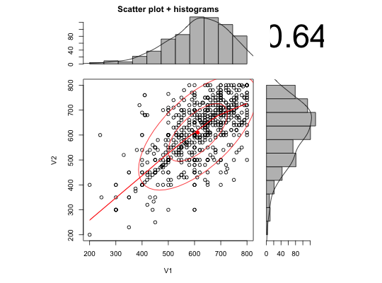
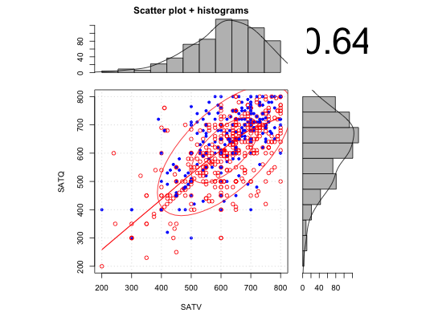

Draw a X Y scatter plot with associated X and Y histograms with estimated densities. Partly a demonstration of the use of layout. Also includes lowess smooth or linear model slope, as well as correlation. Adapted from addicted to R example 78 with further modifications suggested by Jared Smith.
scatterHist(x,y=NULL,smooth=TRUE,ab=FALSE,correl=TRUE,density=TRUE,ellipse=TRUE, digits=2,method,cex.cor=1, title="Scatter plot + histograms", xlab=NULL,ylab=NULL, smoother=FALSE,nrpoints=0, xlab.hist=NULL,ylab.hist=NULL,grid=FALSE, xlim=NULL, ylim=NULL, x.breaks=11,y.breaks=11, x.space=0, y.space=0 ,freq=TRUE, x.axes=TRUE, y.axes=TRUE,...) scatter.hist(x,y=NULL,smooth=TRUE,ab=FALSE, correl=TRUE, density=TRUE, ellipse=TRUE, digits=2, method,cex.cor=1, title="Scatter plot + histograms", xlab=NULL,ylab=NULL,smoother=FALSE, nrpoints=0, xlab.hist=NULL, ylab.hist=NULL, grid=FALSE, xlim=NULL,ylim=NULL,x.breaks=11,y.breaks=11, x.space=0,y.space=0,freq=TRUE,x.axes=TRUE,y.axes=TRUE,...)
| x | The X vector, or the first column of a data.frame or matrix. |
|---|---|
| y | The Y vector, of if X is a data.frame or matrix, the second column of X |
| smooth | if TRUE, then add a loess smooth to the plot |
| ab | if TRUE, then show the best fitting linear fit |
| correl | TRUE: Show the correlation |
| density | TRUE: Show the estimated densities |
| ellipse | TRUE: draw 1 and 2 sigma ellipses and smooth |
| digits | How many digits to use if showing the correlation |
| method | Which method to use for correlation ("pearson","spearman","kendall") defaults to "pearson" |
| smoother | if TRUE, use smoothScatter instead of plot. Nice for large N. |
| nrpoints | If using smoothScatter, show nrpoints as dots. Defaults to 0 |
| grid | If TRUE, show a grid for the scatter plot. |
| cex.cor | Adjustment for the size of the correlation |
| xlab | Label for the x axis |
| ylab | Label for the y axis |
| xlim | Allow specification for limits of x axis, although this seems to just work for the scatter plots. |
| ylim | Allow specification for limits of y axis |
| x.breaks | Number of breaks to suggest to the x axis histogram. |
| y.breaks | Number of breaks to suggest to the y axis histogram. |
| x.space | space between bars |
| y.space | Space between y bars |
| freq | Show frequency counts, otherwise show density counts |
| x.axes | Show the x axis for the x histogram |
| y.axes | Show the y axis for the y histogram |
| xlab.hist | Not currently available |
| ylab.hist | Label for y axis histogram. Not currently available. |
| title | An optional title |
| … | Other parameters for graphics |
Just a straightforward application of layout and barplot, with some tricks taken from pairs.panels. The various options allow for correlation ellipses (1 and 2 sigma from the mean), lowess smooths, linear fits, density curves on the histograms, and the value of the correlation. ellipse = TRUE implies smooth = TRUE. The grid option provides a background grid to the scatterplot. )
Adapted from Addicted to R example 78. Modified following some nice suggestions from Jared Smith.
pairs.panels for multiple plots, multi.hist for multiple histograms.
data(sat.act) with(sat.act,scatter.hist(SATV,SATQ))#or for something a bit more splashy scatter.hist(sat.act[5:6],pch=(19+sat.act$gender),col=c("blue","red")[sat.act$gender],grid=TRUE)